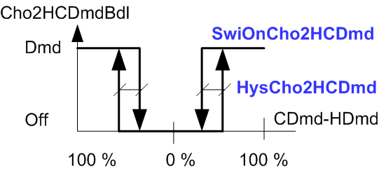

Supply chain changeover function for 2-pipe with bundling (SplyCho2Pipe12)
Overview
The application function "Supply chain changeover function for 2-pipe 12, with bundling" (SplyCho2Pipe12) bundles (or precollects), in 2-pipe systems, the changeover information from several room segments. It is required in the event the number of rooms exceeds the maximum number of group members for a group manager (250 members).
The philosophy of bundling is explained in the Technical principles section: Bundling supply AFs.
Function
The changeover information from a number of room segments is bundled via grouping.
As an example, a bundle consisting of all room segments on a floor.
As installed, each bundle (e.g. floor) is on a separate IP subnet, connected via an IP switch to the central IP router.
The number of heating and cooling demands among the bundled room segments is counted and the AF decides the bundled enumeration: Neither, Heating, or Cooling.
The input is:
- ChovrCnd2Pipe (Changeover condition for 2-pipe) from the central AF SplyCho2Pipe11. It is distributed to the bundling AFs via grouping and from there to the room segments via grouping as well.
The outputs are:
- Cho2HCDmdBdl (Bundling of changeover for 2-pipe heating/cooling demand)
- Cho2NumCDmdBdl (Bundling of changeover function for 2-pipe number of cooling demand)
- Cho2NumHDmdBdl (Bundling of changeover function for 2-pipe number of heating demand)
Configuration
 Parameters
Parameters
The switch-on point for changeover conditions includes a configurable hysteresis to avoid frequent switching. See also the figure below.
Description | Parameter | Default value |
|---|---|---|
Switch-on point for changeover 2-pipe heating/cooling demand | SwiOnCho2HCDmd | 20 [%] |
Hysteresis for changeover 2-pipe heating/cooling demand | HysCho2HCDmd | 10 [%] |
Switch-on point for changeover 2-pipe heating/cooling demand |
 |
More heating demand ◀ ▶ More cooling demand |
Interface
Interface | Description | Type | Ref. | Owned by |
|---|---|---|---|---|
Cho2HCDmdBdl | Bundling of changeover for 2-pipe heating/cooling demand 1:Neither | MCalcVal | ● | - |
Cho2NumCDmdBdl | Bundling of changeover function for 2-pipe number of cooling demand | ACalcVal | ● | - |
Cho2NumHDmdBdl | Bundling of changeover function for 2-pipe number of heating demand | ACalcVal | ● | - |
ChovrCnd2Pipe | Changeover condition for 2-pipe 1:Neither | MPrcVal | ● | - |
SplyChwBdlMst | Manager for supply chain chilled water bundling | GrpMaster | ◉ | SplyChw12 |
Engineering and commissioning
HCGrp65 can be used instead of HGrp65 & CGrp66
When using HCGrp65, handle the the changeover valve override as follows:
If the changeover valve in HCGrp65 is overridden (OpModSwi ≠ Auto),
then Cho2PipeModCmd in AF SplyCho2Pipe11 must be overridden as well.
Note the difference in the enumerations:
HCGrp65\OpModSwi: Auto, Heating, Cooling.
SplyChw11\Chovr2Pipe\Cho2PipeModCmd: Neither, Heating, Cooling.